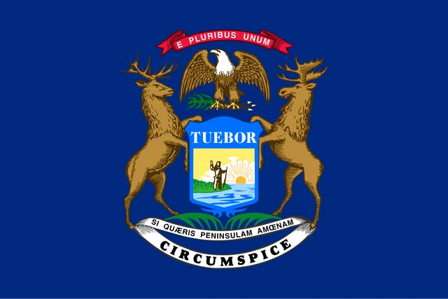
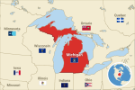
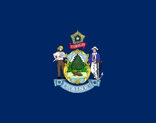
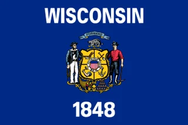
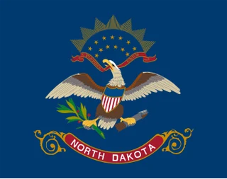

Flag of Michigan
State of Michigan · US states

What the flag looks like
A dark blue field with the coat of arms: a shield showing a man on a lakeshore under a rising sun, held up by a rearing elk and moose, with a bald eagle on top and Latin mottoes above and below.
What it means
The shield's motto "Tuebor" means "I will defend"; the lower motto means "If you seek a pleasant peninsula, look about you".
How to remember it
Michigan's seal-on-blue has an elk and a moose rearing up either side of the shield, with a bald eagle perched on top.
Fun facts
- Its motto, "Si quaeris peninsulam amoenam circumspice", refers to Michigan being made up of two peninsulas.
- The elk and the moose holding up the shield are both animals native to Michigan.
Michigan at a glance
- Nickname
- The Great Lakes State
- Statehood
- 1837
- Capital
- Lansing
- Region
- East North Central
- Population
- 10 million
- Area
- 250,487 km²
- Flag adopted
- 1911
Flags often confused with Michigan

MaineMaine and Michigan both have a moose in their arms on blue. In Maine the moose lies under a pine tree, with a farmer and sailor beside the shield; in Michigan an elk and a moose hold the shield, with a bald eagle on top.
WisconsinMichigan and Wisconsin both show a coat of arms with supporters on blue. Michigan's supporters are an elk and a moose under a bald eagle; Wisconsin's are a sailor and a miner, with WISCONSIN written above.
North DakotaMichigan and North Dakota both show an eagle on dark blue. North Dakota's eagle fills the flag on its own with a red "North Dakota" scroll; Michigan's eagle perches on top of a shield held by an elk and a moose.Learn the flag of Michigan and every other flag with short daily lessons.
Practice with Learn the Flags